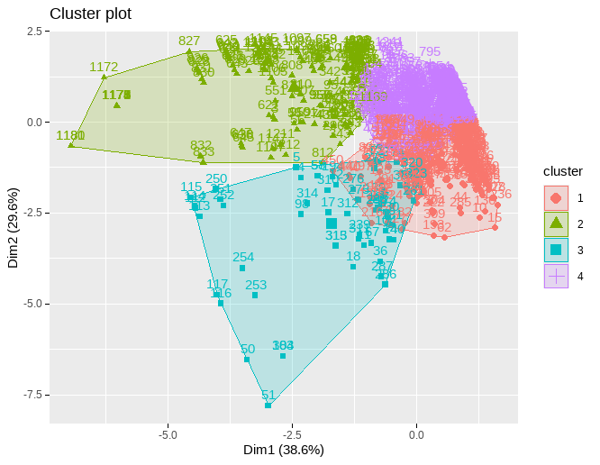
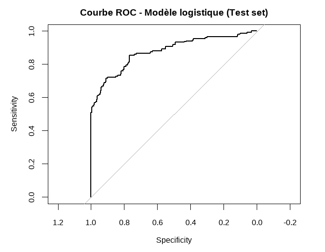
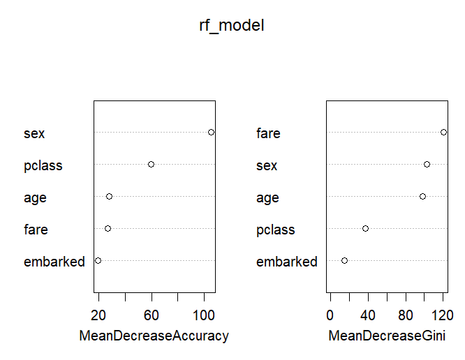

Exercices appliqués en statistique et apprentissage automatique
Un espace distinct de mes projets de recherche environnementale, dédié aux méthodes statistiques et d'apprentissage automatique que je pratique et approfondis — clustering, classification, évaluation de modèles. Les jeux de données utilisés ici sont pédagogiques ; l'objectif est de documenter la méthode, pas le terrain.
Prédiction de survie — jeu de données Titanic
Exercice classique de classification supervisée, utilisé ici pour illustrer trois méthodes complémentaires : une exploration non supervisée par clustering, une évaluation de modèle par courbe ROC, et une interprétation de modèle par importance des variables (Random Forest).
Structure des données par clustering
Projection des individus sur les deux premières dimensions d'une analyse factorielle, avec regroupement en 4 clusters. Les enveloppes convexes montrent des groupes assez bien séparés sur le premier axe (38,6 % de variance expliquée), avec un chevauchement notable entre les clusters 1 et 4.

Performance du modèle logistique
Courbe ROC sur le jeu de test pour un modèle de régression logistique prédisant la survie. La courbe s'écarte nettement de la diagonale (classification aléatoire), indiquant une bonne capacité de discrimination du modèle entre les deux classes.

Importance des variables (Random Forest)
Classement des variables prédictives selon deux critères : la baisse de précision moyenne (MeanDecreaseAccuracy) et la baisse moyenne de l'indice de Gini (MeanDecreaseGini) lorsqu'elles sont retirées du modèle. Le sexe et le tarif payé (fare) ressortent comme les variables les plus déterminantes — cohérent avec les analyses historiques du naufrage.

Ces trois méthodes — non supervisée, linéaire, et à base d'arbres — offrent des lectures complémentaires d'un même problème de classification, et illustrent une palette d'outils statistiques mobilisables au-delà des projets de télédétection.